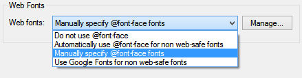
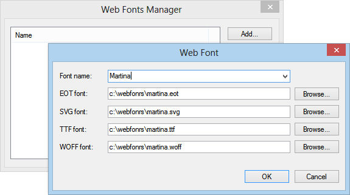
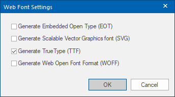
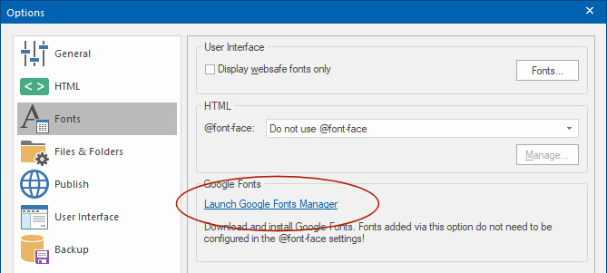
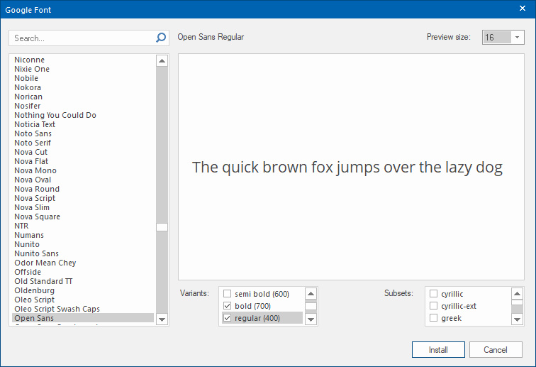

Using Web Fonts in WYSIWYG Web Builder
Until a few years ago you could only use a small selection of "web safe" fonts. Thanks to @font-face (which is supported by all modern
browsers) you can now use (almost) any font without having to worry whether or not the font is also installed on the computer of your website
visitors. WYSIWYG Web Builder supports several ways to use web fonts in your pages:
• Automatically use @font-face for non-websafe fonts.
• Manually specify @font-face fonts.
• Use Google Fonts for non web-safe fonts
You can find the web fonts options in Menu->Tools->Options->Fonts
Notes about @font-face:
• Be aware that font files can be pretty large, so they can add a considerable weight to the page.
• Make sure you check the license of the font you wish to use, as most fonts are not licensed to allow this kind of use. Making the font available on your server may violated the end user licensing agreement.
• Not all fonts can be used in websites. Make sure you test the fonts in multiple browsers and on different devices!
• Be aware that font files can be pretty large, so they can add a considerable weight to the page.
• Make sure you check the license of the font you wish to use, as most fonts are not licensed to allow this kind of use. Making the font available on your server may violated the end user licensing agreement.
• Not all fonts can be used in websites. Make sure you test the fonts in multiple browsers and on different devices!
Manually specify @font-face fonts
In some cases it's necessary to manually configure @font-face. For example if it's not possible to automatically determine the filename associated with a specific font or if you want to use separate files for each format. Using this option allows advanced users to manually link font files to a specific font.
In some cases it's necessary to manually configure @font-face. For example if it's not possible to automatically determine the filename associated with a specific font or if you want to use separate files for each format. Using this option allows advanced users to manually link font files to a specific font.
Automatically use @font-face for non-websafe fonts
If you enable this option you will be able to use any type of true type font even if it's not web safe by using a new CSS3 feature called @font-face. WYSIWYG Web Builder will automatically generate the necessary code and upload the font to the server.
Unfortunately, not all browsers do support the same font types. Via the 'Manage' button it is possible to configure which font types will be published. Currently, TTF and WOFF are supported by most modern browsers. If you would like to support older version of IE then you can also enable EOT.
If you enable this option you will be able to use any type of true type font even if it's not web safe by using a new CSS3 feature called @font-face. WYSIWYG Web Builder will automatically generate the necessary code and upload the font to the server.
Unfortunately, not all browsers do support the same font types. Via the 'Manage' button it is possible to configure which font types will be published. Currently, TTF and WOFF are supported by most modern browsers. If you would like to support older version of IE then you can also enable EOT.

Use Google Fonts for non web-safe fonts (deprecated)
Note: this option has been replaced by the Google Fonts Manager (see above). The option is still available for backwards compatibility.
Enable this option if you plan to use Google Fonts in your project. If this option is enabled then the software will assume that all non web safe fonts you are using are Google Web Fonts and it will automatically generate a link to the font in the HTML code, so you do not have to do that manually. Note however that to use Google Fonts during 'design time' you must have it installed on your computer!
Here's how you can install a Google Font on your computer:
Step 1
Visit the Google Fonts website: http://www.google.com/fonts/
Step 2
Find the font you want to use and add it to a collection (Click Add to collection).
Step 3
To be able to use the font on your computer you will have to download and install it so it will be available in WYSIWYG Web Builder (and other Windows software).
Click the "Download your Collection" link at the top of the Google Fonts website and you will get a zip file containing all the requested font(s) in TTF format.
Step 4
Unzip the collection and and drag the TTF files to your Windows fonts folder.
(In Windows 8: Control Panel\Appearance and Personalization\Fonts).
The font(s) will now be available to all your Windows applications.
Step 5
To see the font in WYSIWYG Web Builder, make sure the option 'Display web safe fonts only' is disabled: Menu->Tools->Options->Miscellaneous
Note: this option has been replaced by the Google Fonts Manager (see above). The option is still available for backwards compatibility.
Enable this option if you plan to use Google Fonts in your project. If this option is enabled then the software will assume that all non web safe fonts you are using are Google Web Fonts and it will automatically generate a link to the font in the HTML code, so you do not have to do that manually. Note however that to use Google Fonts during 'design time' you must have it installed on your computer!
Here's how you can install a Google Font on your computer:
Step 1
Visit the Google Fonts website: http://www.google.com/fonts/
Step 2
Find the font you want to use and add it to a collection (Click Add to collection).
Step 3
To be able to use the font on your computer you will have to download and install it so it will be available in WYSIWYG Web Builder (and other Windows software).
Click the "Download your Collection" link at the top of the Google Fonts website and you will get a zip file containing all the requested font(s) in TTF format.
Step 4
Unzip the collection and and drag the TTF files to your Windows fonts folder.
(In Windows 8: Control Panel\Appearance and Personalization\Fonts).
The font(s) will now be available to all your Windows applications.
Step 5
To see the font in WYSIWYG Web Builder, make sure the option 'Display web safe fonts only' is disabled: Menu->Tools->Options->Miscellaneous


Google Font Manager
Adding Google Fonts to your website has never been easier. Unlike in previous versions, Google Fonts no longer have to be manually downloaded/installed from the Google website, The Google Font Manager takes care of this! Fonts that are installed via the Font Manager will be added to the ‘web safe' fonts list and the necessary CSS code will be generated automatically when you preview or publish the website.
Font can have different variants, like light, medium, bold, regular etc. The available variants can be enabled per font.
Adding Google Fonts to your website has never been easier. Unlike in previous versions, Google Fonts no longer have to be manually downloaded/installed from the Google website, The Google Font Manager takes care of this! Fonts that are installed via the Font Manager will be added to the ‘web safe' fonts list and the necessary CSS code will be generated automatically when you preview or publish the website.
Font can have different variants, like light, medium, bold, regular etc. The available variants can be enabled per font.

